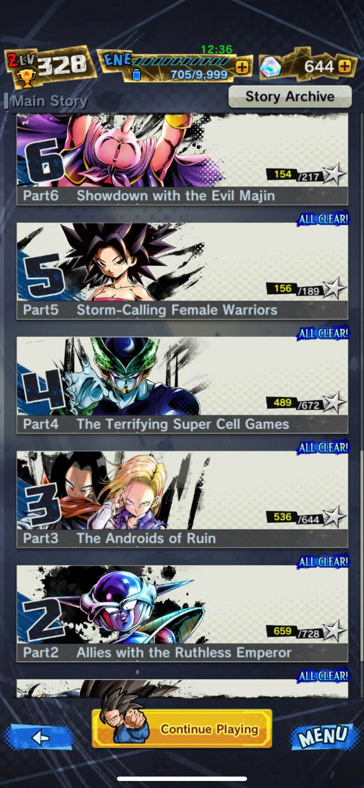

Eventos
Entérate de los últimos eventos y actividades especiales en el juego.
Nueva etapa agregada a Ultimate Equipment Collection! Disponible 15/06/2022 15:00 - 27/07/2022 15:00 (JST)

¡Se ha agregado una nueva etapa a Ultimate Equipment Collection por tiempo limitado donde puedes obtener equipo exclusivo para Super Saiyan Broly: Full Power (DBL30-03S)! ¡No te pierdas esta oportunidad de hacerte con un equipo increíble para potenciarlo!
por estas fechas se revelen eventos con reconpensas buenas pero que se les conoce como baners trampas ,ya que son para gastarse todos los cronocristales antes de el festival de este año ,donde se revelan personajes muchisimo mejores
por ejemplo uno de esos baners son estso

un consejo es ahorar y no gastar hasta dentro de la mitad del festuval
eventos que recomiendo
El rush senkai es muy importante para cuando tienes personajes viejos que te gustan ,asi podras despertarles el senkai a personajes que mejoren las estadisticas de tus personajes

personajes F2P
estos son algunos de lso ultimos titulos de personajes fritoplays que salieron y que siempre hay que farmear hasta el maximo


El modo historia
siempre hay que cmpletar el modo historia hasta el maximo de estreyas y con todas las recompensas que obtengas podras comprar personajes del momento
